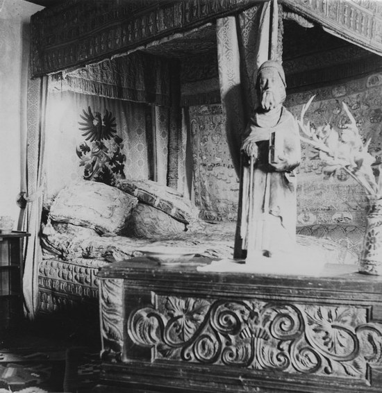

© Muzeul Național Peleș


 printați
printați
+40244 310 918 |
peles.ro@gmail.com |
Patul Doria
O piesă de o valoare excepţională, datând din jurul anilor 1572, care aparţine colecţiei Regelui Carol I din castelul Peleş este patul Doria.
Giovanni Andrea Doria (1539-1606), nepotul şi fiul adoptiv al celebrului amiral, Andrea Doria, făcea parte din familia dogilor din Genova. A condus în Bătălia de la Lepanto (1571), flota creştină a Sfintei Ligi (Spania, Veneţia, Sfântul Scaun şi Genova) care, sub comanda lui Don Juan de Austria, a obţinut o strălucită victorie împotriva flotei turceşti, condusă de Ali – Arab Paşa. Această victorie care a provocat o explozie de bucurie în întreaga creştinătate, a pus capăt legendei invincibilităţii otomane.
Familia amiralului Doria deţinea o bogată colecţie de artă, obiecte valoroase de orfevrărie, o serie de tapiserii comandate prin intermediul lui Lazzaro Calvi şi Luca Cambiaso, fresce preţioase cu subiecte mitologice şi alegorice, mobilier etc., în palatele sale din Fassolo, Pegli (vila Centurione Doria, azi muzeu naval) şi Grimaldi (Genova).
logoPatul cu baldachin, executat de artizani din nordul Italiei (probabil din Genova), în jurul anilor 1573 a aparţinut, ca pat de campanie, amiralului G.A.Doria, lucrarea fiind achiziţionată, în a doua jumătate a secolului al XIX-lea, de către consulul german, Felix Bamberg*, şi menţionată în cataloagele manuscrise, semnate şi datate 1889. Acesta o oferă spre cumpărare regelui Carol I, împreună cu un valoros lot de picturi.
Piesa a fost expusă de la bun început, în Castelul Peleş. În timpul Primului Război Mondial, este transportată, împreună cu celelalte valori patrimoniale de excepţie din Peleş, în vederea protejării, în Moldova, la Domeniul Coroanei (Dobrovăţ sau Zorleni).
În anii 1922, regina Maria, în campania de amenajare a Branului, a transportat patul, în proaspătul Salon Doria din castel.
Readus şi remontat, patul se găseşte în anul 1933 în Sala de concerte a castelului Peleş. Inventarul întocmit în anul 1948 înregistrează patul în Galeria de marmură, unde a fost expus până în anul 1977, când a început operaţiunea de transport şi depozitare a pieselor din patrimoniul castelului, la Posada. (În perioada 1954 – 1956 este transferat la Muzeul Naţional de Artă al României şi ulterior returnat). După anul 1990, materialul textil şi broderiile au intrat într-o lungă perioadă de restaurare, în laboratoarele M.N.Peleş, lucrare laborioasă, în curs de finalizare în acest an.
Patul cu baldachin se compune din mai multe părţi, după cum urmează:
draperia fundal având brodată o scenă de luptă navală;
draperia acoperiş central brodată cu decor pajură cu şase pui;
draperia laterală cu însemne heraldice;
trei lambrechine brodate cu motive floral–vegetale şi zoomorfe
cuvertura şi două perne
patru stâlpi din lemn de nuc, bogat sculptat.
Broderiile par a proveni din ateliere diferite şi din perioade diferite.
Asamblarea piesei s-a executat, probabil, în cursul unor operaţii de restaurare din anul 1877, anterioare achiziţionării de către Regele Carol I. Din piesa originală se mai păstrează doar broderia de fundal şi cei patru stâlpi din lemn ai baldachinului.
Broderia fundal, montată pe o draperie din damasc de mătase naturală gri-bleu imortalizează, alegoric, evenimentul sfârţitului de secol XVI- lupta navală de la Lepanto.
De formă dreptunghiulară, cu un chenar brodat cu fir metalic auriu pe suport de ţesătură fină de in, păstrează la colţuri decoruri cu motive avimorfe (pasăre aşezată pe o ramură de măr), în tonuri cromatice de maron, verde, galben, bej.
Chenarul din partea stângă este format din: trei medalioane ovale, brodate cu fir de mătase reprezentând un pavilion pagodă (roşu, galben, maron, bej), o compoziţie heraldică surmontată de motive florale (grena, albastru, galben, verde stins), o cetate brodată cu fir de mătase bej. În cartuş se observă o figură masculină, pictată pe ţesătura textilă, în griuri albăstrii, bustul unui cavaler în armură, cu guler gen Renaştere spaniolă, colan, profil cu mustaţă, privind spre partea stângă (Miguel Cervantes, erou şi participant la lupta de la Lepanto, unde îşi pierde un braţ). Deasupra portretului se găseşte un scut cu însemne heraldice. Silueta unui arbore stilizat, înflorit, în nuanţe de galben, verde, maron oferă o notă de optimism decorului.
Chenarul din partea de sus cuprinde: şase medalioane ovale, o bordură cu broderie fină din fire de argint, în interiorul medalioanelor aştrii stilizaţi, o alegorie a soarelui în cromatică de galben – oranj, semiluna, motiv rozetă solară, lună plină în tonuri de bej, albastru şters, galben. Central, un castru roman înconjurat de vegetaţie abundentă, predominând culoarea verde.
Chenarul din partea dreaptă prezintă trei medalioane: un decor arhitectural (far cu acoperiş), o compoziţie heraldică inclusă într-un lambrechin roşu de mătase, surmontată de motive florale, în tonuri de galben, verde, bej. Important este cartuşul cu specificaţia în limba franceză “Restaurée en 1877 à Mes……. (numele localităţii şters, ilizibil, probabil, Messina), şi adăugat, Baron Felix et Baronesse Elisabeth de Bamberg. Deasupra acestui cartuş, un cavaler în costum militar cu sabie şi inscripţia “D.I.D.Austria” ( desigur, Don Juan de Austria, fiul lui Carol Quintul, amiralul care s-a aflat în fruntea flotei creştine de la Lepanto).
Central. Subiectul este tratat în două registre. Registrul inferior imortalizează confruntarea navală a flotei creştine cu cea musulmană. S-ar părea că autorul broderiei s-a inspirat după o pictură alegorică a lui Paolo Veronese, datată 1572, care poarta titlul Lupta de la Lepanto (Galleria dell’Accademia din Veneţia). Sunt prezentate vase angajate în luptă, delfini într-o zonă de ţărm, pe un fundal cromatic bej, albastru deschis, nuanţe de roşu, bej şi broderie cu fir de aur la vasele de luptă. Ţărmul este redat pe fond de broderie din mătase, în multiple nuanţe de verde, clădiri, corturi, pâlcuri de arbori, lac în cromatică de bejuri, roşu, verde, bleu. Registrul superior reprezintă o alegorie a puterilor divine care participă la această bătălie (îngeri plutind pe nori, central în medalion cu raze, Madona binecuvântând lupta, înconjurată de cete îngereşti, în medalioane mici). Din loc în loc, flori brodate cu fir de mătase. Atmosfera este dinamică, scena reală a luptei se împleteşte în mod fericit cu planul superior, al divinităţilor protectoare.
Broderia, executată în stil occidental, a fost distrusă, având porţiuni şterse. Restaurarea veche este evidenţiată, în primul rând de firul metalic, cel vechi fiind puternic oxidat şi fragilizat, cel nou cu o culoare mai vie şi cu mult mai rezistent. Culorile broderiei vechi sunt culori vegetale.
Draperia acoperiş sau “cerul”, formată din broderie cu fir mătase, combinată cu fir metalic pe suport de damasc din mătase naturală, albastru-gri (damascul original) prezintă central, în medalion, o pajură (simbolizând mesagerul celei mai înalte divinităţi, soarele, de asemenea emblema imperială a lui Cezar, precum şi a altor căpetenii războinice cărora le imprumută atributele de putere) cu aripile desfăcute, protejând şapte pui în cuib. Motive vegetal – florale şi vrejuri înconjoară scena, în culori de bej, maron şi albastru-verde. Bordura este alcătuită din dragoni stilizaţi şi vrejuri vegetale în volută asociate cu motive florale.
Această broderie este singura care păstreaza suportul material original, fiind lată de 63 cm, lăţime des întâlnită la mătăsurile italiene din secolul al XVI-lea. Din observaţii şi măsurători rezultă că materialul original a fost înlocuit în două rânduri, cu ţesătură de război mecanic, modificându-se astfel lăţimile.
Lambrechinele exterioare păstrează o broderie puternic reliefată, cu stema Brandenburg – amintind de ramura franconiană a Zollernilor – motiv heraldic, pajură cu aripile larg deschise şi cruce surmontată, semn că a fost adaugată mai târziu, când fusese deja in posesia regelui Carol I, iar firul textile este vizibil vopsit în culori chimice.
Lambrechinul din faţă este interesant prin registrul superior care prezintă opt buchete de flori în glastre (simbolizând credinţa în Dumnezeu sau faţă de împărat), în cromatică de roşu, galben, albastru. La mijloc un păun (în tradiţia creştină, păunul simbolizează discul solar, un semn al nemuririi, coada lui evocând cerul înstelat), sigur, aici simbolul heraldic care aminteşte blazonul familiei de Wied. |
 |